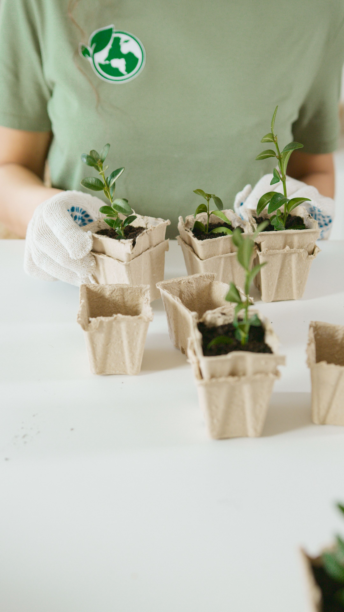
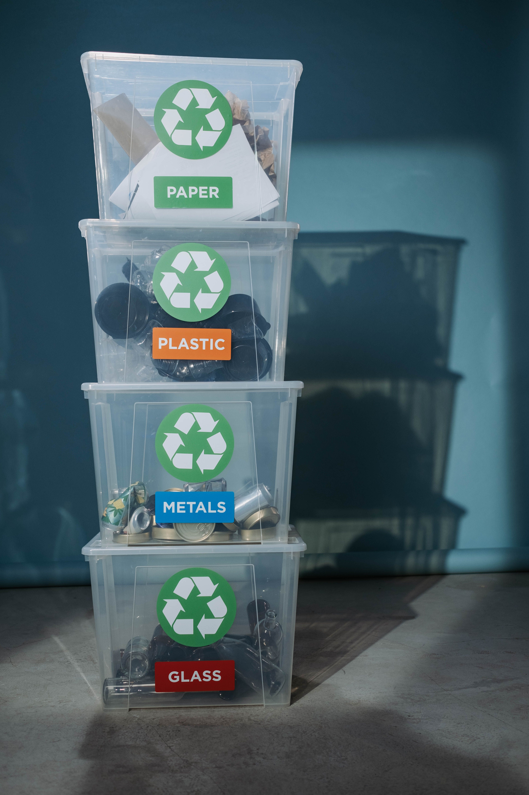
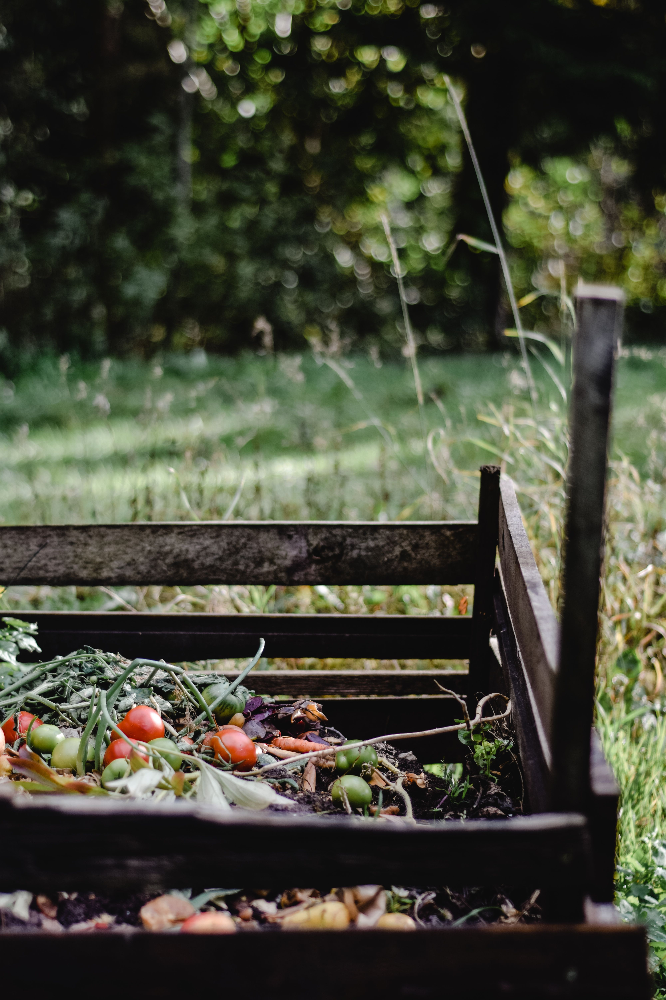

Первый шаг
Refuse — Откажись
Не берите то, что вам не нужно. Не совершайте импульсивных покупок.
Второй шаг

Reduce — Сократи
Покупайте меньше. Выбирайте вещи долговечные, многоразовые. Сократите лишние траты ресурсов: воды, электричества, времени.
Третий шаг

Reuse — Используй повторно
Дарите вещам вторую жизнь. Используйте многоразовые бутылки, сумки, контейнеры. Отдавайте ненужные вещи тем, кому они нужны.
Четвертый шаг

Recycle — Сдавайте на переработку
Сортируйте отходы и сдавайте на переработку бумагу, стекло, металл и пластик.
Пятый шаг

Rot — Компостируйте органику
Органические отходы можно компостировать. Пищевые продукты можно отдавать людям или животным.